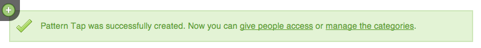
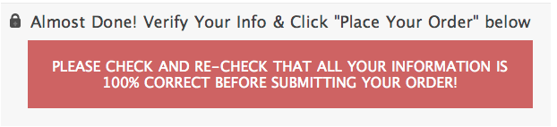

Girl Develop It is here to provide affordable and accessible programs to learn software through mentorship and hands-on instruction.
Some "rules"
I'm here to help!
Human Computer Interaction
(available to NC residents via NC LIVE)
You've already done the hard part!


Fun != easy to read.